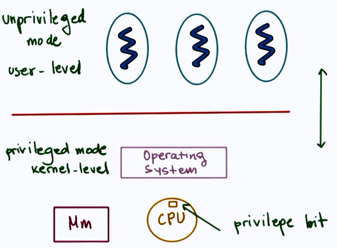
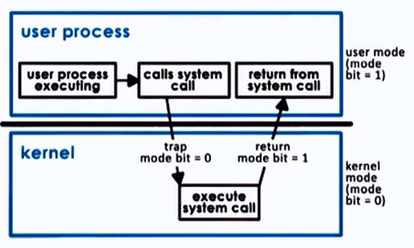

Operating Systems Overview
Operating Systems :
- Direct operational resources [CPU, memory, devices]
- Enforces working policies [Resource usage, access]
- Mitigates difficulty of complex tasks [abstract hardware details (using system calls)]
What is an Operating System?
- Intermediate between Hardware and Software applications
- Hides hardware complexity (Read/write file storage, send/receive socket network)
- Handles resource management (CPU scheduling, Memory management)
- Provide isolation and protection (allocate different parts of memory to different applications so that applications don't overwrite other memory locations)
Operating System definition:
An Operating System is a layer of systems software that:
- directly has privileged access to the underlying hardware;
- hides the hardware complexity;
- manages hardware on behalf of one or more application according to some predefined policies.
- In addition, it ensures that applications are isolated and protected from one another.
Operating System examples:
| Desktop | Embedded devices |
|---|---|
| Microsoft Windows | Android OS |
| MAC OS X (BSD) | iOS |
| LINUX | Symbian |
| ... | ... |
OS Elements
- Abstractions (corresponds to applications that OS executes)
- process, thread, file, socket, memory page
- Mechanisms (on top of Abstractions)
- create, schedule, open, write, allocate
- Policies (how mechanisms are used to manage underlying hardware)
- Least Recently Used (LRU) , Earliest Deadline First (EDF), etc.
Example :
Memory Management:
- Abstractions: Memory page
- Mechanisms: Allocate, map to a process
- Policies: LRU
OS Design Principles
- Seperation of mechanism and policy
- implement flexible mechanisms to support many policies
- e.g. LRU, LFU, random
- Optimize for common case
- Where will the OS be used?
- What will the user want to execute on that machine?
- What are the workload requirements?
User/ Kernel Protection Boundary
- user-level => applications [underprivileged mode]
- kernel-level => OS Kernel [privileged access, hardware access]

- User-Kernel switch is supported by hardware.
- using trap instructions
- system calls like:
- open (file)
- send (socket)
- malloc (memory)
- signals
System call Flowchart

- To make a system call, an application must:
- write arguments
- save relevant data ast well defined location
- make system calls using system call number
- In synchronous mode : wait until system call completes.
Basic OS services
- process management
- file management
- device management
- memory management
- storage management
- security
Linux System Calls
| Task | Commands |
|---|---|
| Process Control | fork (); exit(); wait(); |
| File Manipulation | open(); read(); write(); |
| Device Manipulation | ioctl(); read(); write(); |
| Information Maintenance | getpid(); alarm(); sleep(); |
| Communication | pipe(); shmget(); mmap(); |
| Protection | chmod(); umask(); chown(); |
Linux Architecture